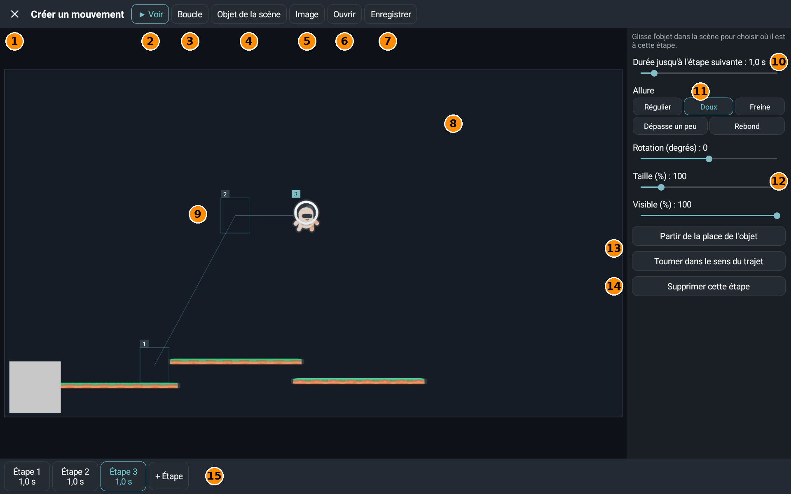

Un movimiento hace que un objeto se mueva por etapas: colocas el objeto en varios sitios y Yop2D calcula el camino entre ellos. El editor se abre con el botón Movimiento de la ventana Assets.
La pantalla de un vistazo

- 1Cerrar el editor. Acuérdate de Guardar antes.
- 2▶ Ver: reproduce el movimiento en la escena para verlo. El botón pasa a ■ Parar.
- 3Bucle: cuando está activado, el movimiento vuelve a empezar sin fin.
- 4Objeto de la escena: elige un objeto de tu escena para moverlo. Su sitio actual es la etapa 1.
- 5Imagen: elige una imagen para probar el movimiento, sin usar un objeto de la escena.
- 6Abrir: vuelve a abrir un movimiento ya guardado en el proyecto.
- 7Guardar: dale un nombre al movimiento; se guarda en la carpeta Mouvements de Assets.
- 8La escena: tu decorado de fondo, con sus objetos reales. Arrastra el objeto para elegir dónde está en la etapa elegida.
- 9Las etapas: cada cuadrado numerado es el sitio del objeto en una etapa, y la línea las une en orden. La etapa elegida está en azul.
- 10Tiempo hasta el siguiente paso: el tiempo, en segundos, para ir de esta etapa a la siguiente.
- 11Ritmo: la manera de ir de una etapa a otra: Constante, Suave, Frena, Se pasa un poco o Rebote.
- 12Rotación (grados), Tamaño (%) y Visible (%): el estado del objeto en esta etapa. 100 % = tamaño normal o bien visible; 0 = invisible en la transparencia.
- 13Partir del lugar del objeto: el movimiento parte de donde está el objeto en el juego. Girar según el trayecto: el objeto gira para mirar hacia donde va.
- 14Borrar este paso: quita la etapa elegida. Hacen falta al menos 2 etapas.
- 15Las tarjetas de etapas: toca una etapa para ajustarla, o + Paso para añadir una.
👉 Para reproducir el movimiento en tu juego, usa el nodo Reproducir movimiento (etapas) en el Blueprint.